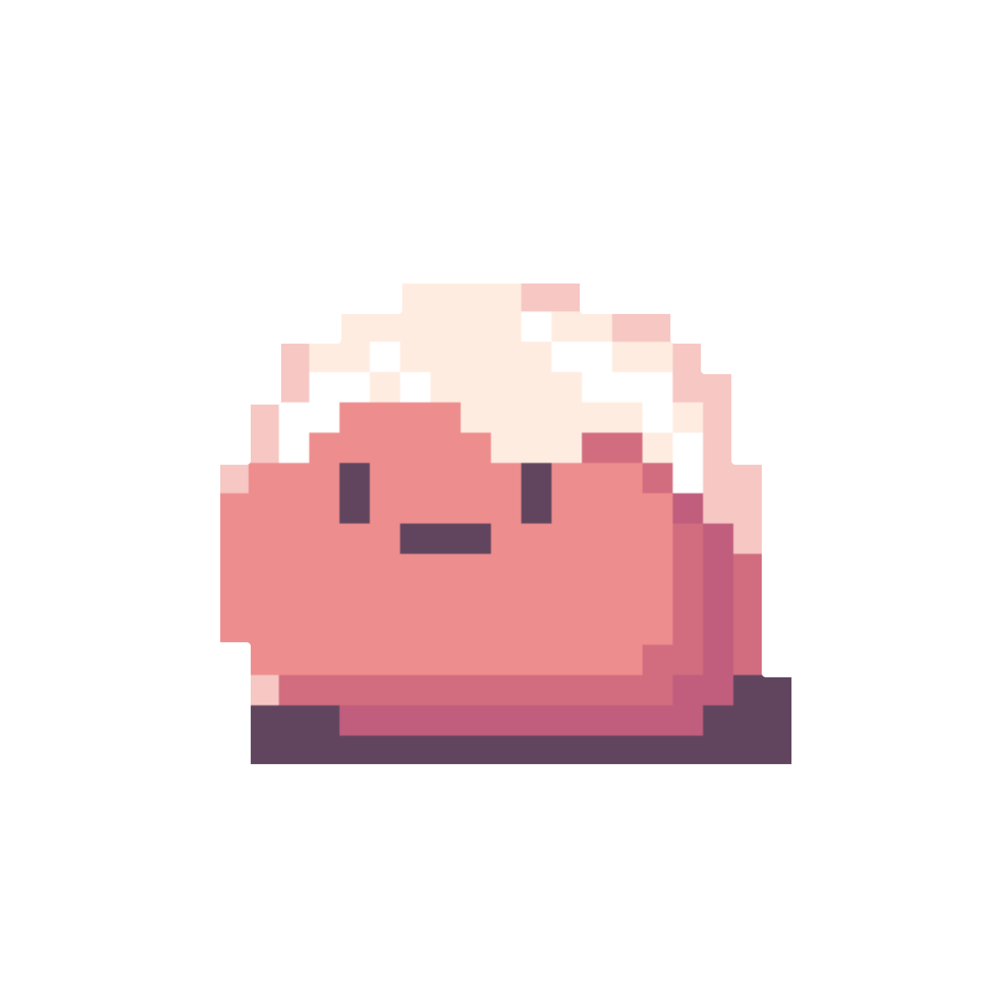
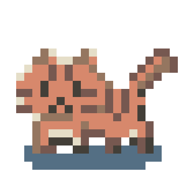

ゲームづくりのこと、キャラクターのこと、にくねこスタジオの日々をお届けします。
FEATURED
REPORT · 2026.09.26
会場で感じた、ゲーム展示とプロモーションの変化。
LATEST POSTS
REPORT
会場で感じた展示とプロモーションの変化。

CHARACTER
おにくの作品や活動をnoteでご紹介。

NEWS
新作やサイト更新についてのお知らせ。
記事はこれから追加していきます。更新のお知らせは 公式X をご覧ください。